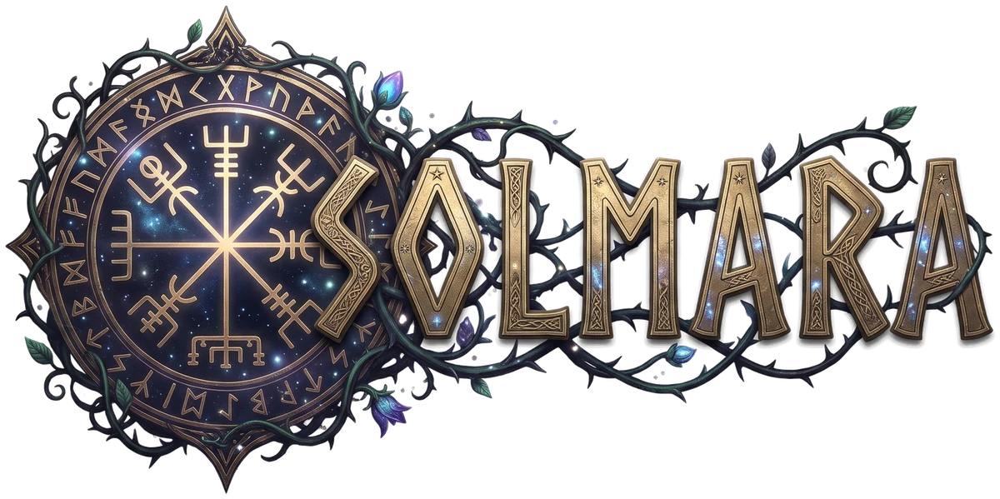

Vintergatan
Wavetable synth
From soft pads to heavy bass. Opens your Serum and Vital presets.

Instruments, effects and a timeline to write, play, record and mix. On Mac, Windows and Linux.
Early in development · nothing to download yet
Everything a song needs comes with Solmara. Your own plugins play beside them.
Wavetable synth
From soft pads to heavy bass. Opens your Serum and Vital presets.
Virtual analogue synth
Bright and immediate, for leads, stabs and pads.
Drum machines
Three analogue machines, every voice built from its circuit.
Sampler
Plays sample libraries in SFZ, DecentSampler and SoundFont formats.
The scale shaded behind your notes, and chords suggested for the ones you pick.
Steps, accents and swing, the way drum machines work.
Rows of notes and commands, fast from the keyboard.
A rhythm written as a line of text, heard as you type.
The same studio on all three. Start a song on one and finish it on another.
Saved as readable text, so a version history shows what changed, and brought back after a crash.
Everything the editor does also works from the command line, so scripts and AI agents can build and mix a song. Leave it alone and Solmara is simply a studio.
Solmara is being built a piece at a time. When there is something to try, it will be here and under Releases on GitHub.
Sol is the sun. Mara is the spirit of Nordic folklore who sits on a sleeper's chest, the mare in nightmare. Solmara is the sun's nightmare: an eclipse, when the wolf that chases the sun across the sky catches it.
Tell us on GitHub: what you did, what you heard, and what you expected.